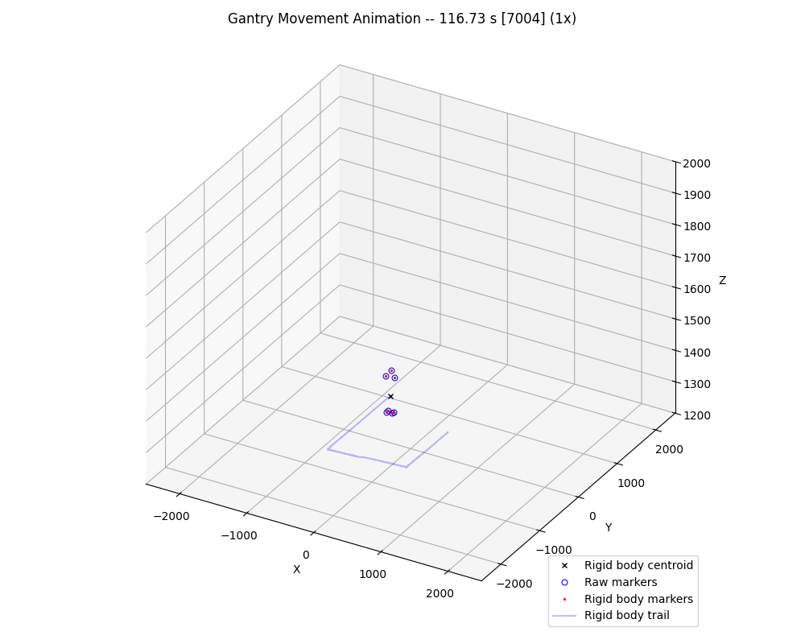
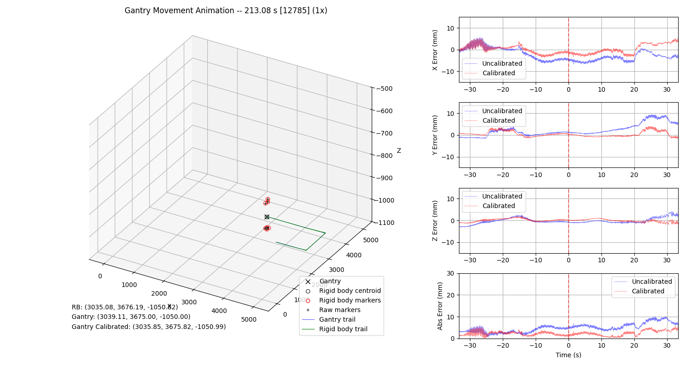
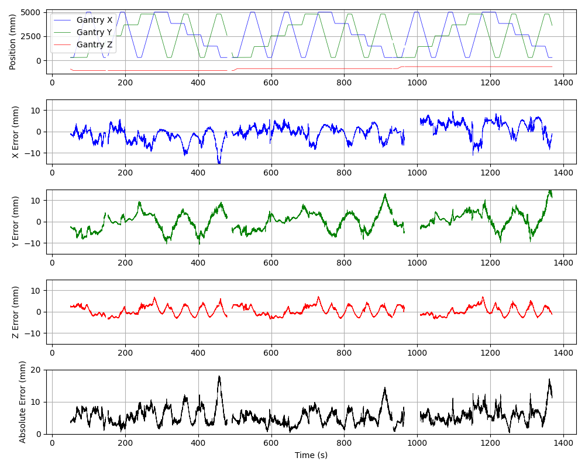
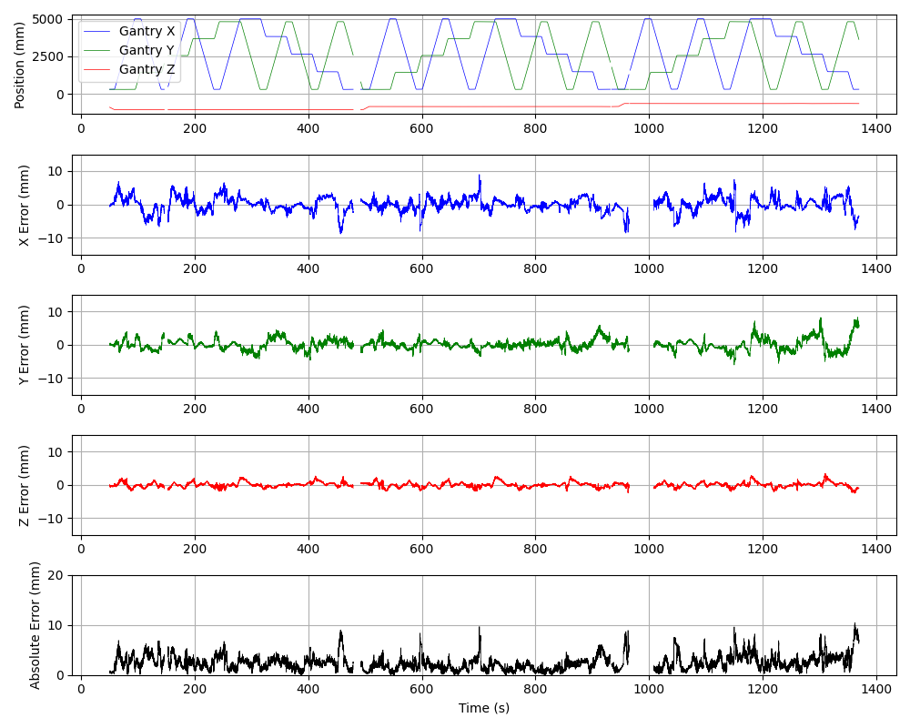
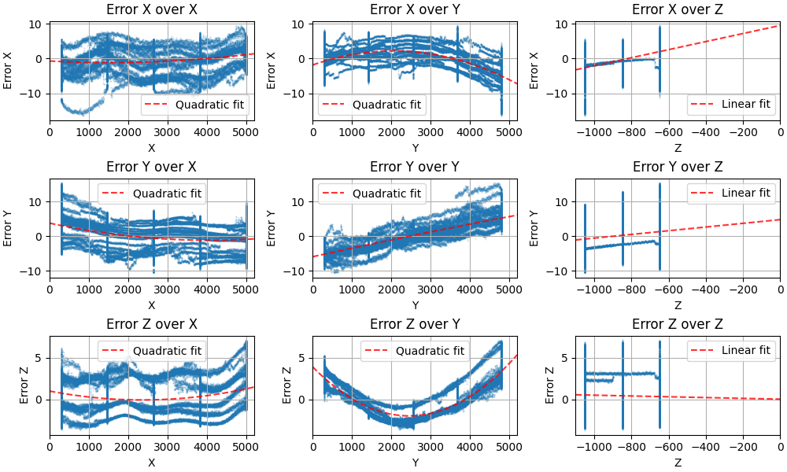
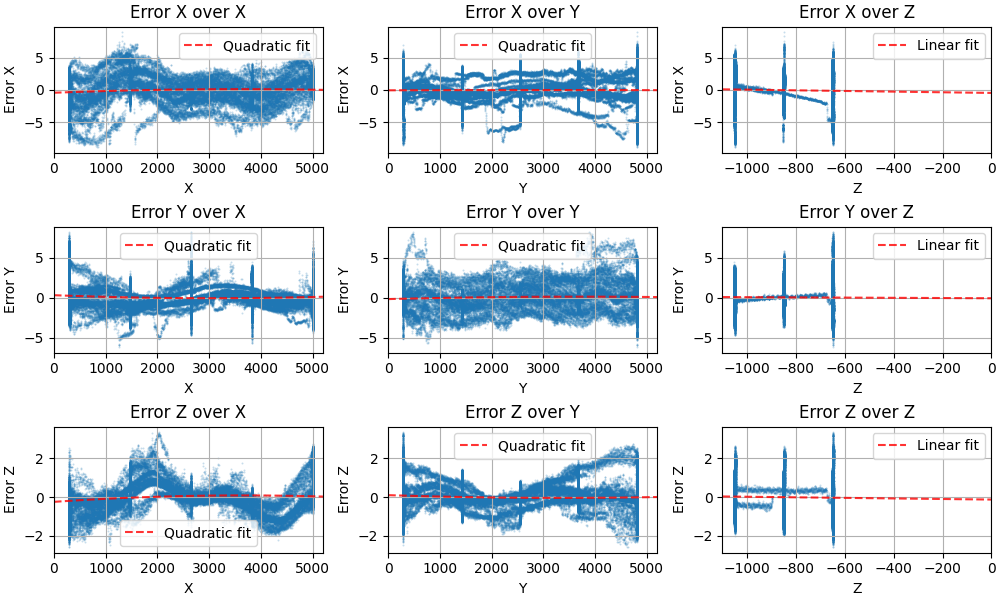
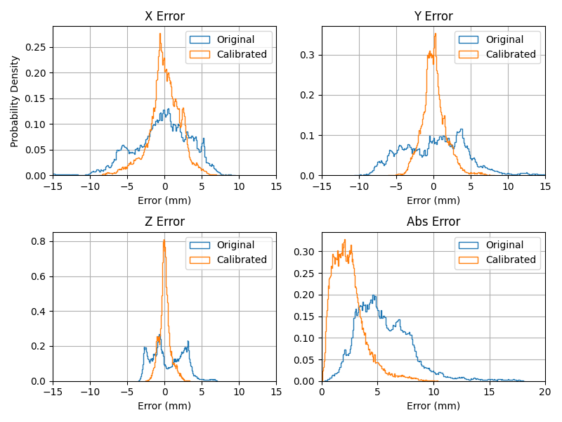
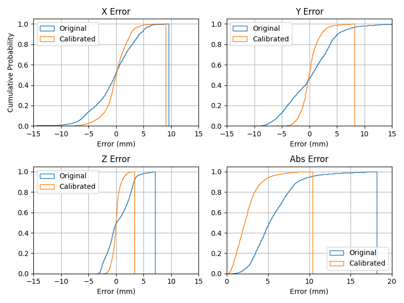

4.3. Usage¶
Important
Remember that the calibration process assumes that the gantry data is the commanded position of the gantry robot and the OptiTrack data is the actual position of the gantry robot. After the calibration is complete, the scripts that evaluate the calibration results correct the OptiTrack data with the calibration parameters.
We will use the measurement 2025-04-09 (located in the calibration/measurements/2025-04-09/ directory of the repository) to explain how to use the scripts. To execute the code it is recommended to change the working directory to the measurement directory:
cd calibration/measurements/2025-04-09/
This way the scripts will be able to find the data files without needing to specify them by command line arguments.
4.3.1. Raw Gantry and OptiTrack Path Visualization¶
The raw gantry and OptiTrack data can be visualized using the plot_movement_gantry.py and plot_movement_optitrack.py scripts, respectively. For example, to visualize the OptiTrack data, run:
python ../../src/plot_movement_optitrack.py
It will open a window with the OptiTrack data visualization. Fig. 35 below shows the OptiTrack data visualization.
{kind=link}

Fig. 35 OptiTrack data visualization showing the 3D trajectory of the gantry robot as measured by the motion capture system.¶
You can use the keyboard to control the playback of the data. The available controls are shown when the script is executed:
Animation Controls:
------------------
Space: Play/Pause
PageUp/PageDown: Increase/Decrease playback speed
Shift + PageUp/PageDown: Increase/Decrease playback speed by 5x
m/n: Step forward/backward 1 frame
M/N: Step forward/backward 60 frames
Ctrl+m/Ctrl+n: Step forward/backward 600 frames
i/o: Jump to start/end
4.3.2. Calibration Configuration¶
Before running the calibration script, you need to create a JSON configuration file, by default named config.json. The configuration file defines the calibration parameters, data processing options, and analysis settings. The configuration format follows the structure defined in the CalibrationConfig class in data.py, allowing you to customize:
Alignment parameters and optimization settings
Correction (calibration) parameters and methods
Frame skipping ranges for excluding poor tracking data
Optimization tolerances and display options
The contents of the configuration file used for the 2025-04-09 measurement are the following:
{
"alignment": {
"init_params": [2500, 2500, -2500, 0, 0, -1.5707963267948966, 50],
"max_rotation": 0.098174770424681,
"rotation_center": [2500, 2500, -750],
"optimization": {
"method": "Powell",
"tolerance": 1e-9,
"display": true
}
},
"calibration": {
"enabled": true,
"optimization": {
"method": "Powell",
"tolerance": 1e-9,
"display": true
}
},
"skip_frames": {
"enabled": true,
"ranges": [
[8800, 9200],
[28750, 29550],
[55900, 56050],
[57870, 58000]
]
}
}
Some important considerations:
The initialization parameters in the
init_paramsfield of thealignmentsection are the initial values for the optimization of the calibration alignment step. If not specified, default values of 0 are used. The parameters are the following, in the order they are used in the optimization (see theget_processed_datafunction in thedata.pyfile):x_shift: Translation along the x-axis in mmy_shift: Translation along the y-axis in mmz_shift: Translation along the z-axis in mmx_rotation: Rotation around the x-axis in radiansy_rotation: Rotation around the y-axis in radiansz_rotation: Rotation around the z-axis in radianstime_shift: Time shift in seconds
Important
These parameters may need to be set manually for the optimization to converge to the optimal value.
The
max_rotationparameter is the maximum rotation allowed in the optimization for all axes. If not specified or if this value is too large the optimization may not converge to the optimal value.The
skip_framesparameter is a list of frame ranges to skip. The frame ranges are defined as a list of tuples, where each tuple contains the start and end frame of the range. The frame ranges are used to exclude frames with poor tracking quality.
4.3.3. Run the Calibration¶
To execute the calibration execute the run_calibration.py script:
python ../../src/run_calibration.py
When you run the calibration script, the computed parameters (both alignment and correction) are saved in a calibration.json file, which is then used by the plotting and analysis scripts.
The contents of the calibration file used for the 2025-04-09 measurement are the following:
{
"alignment": [
2569.064951390571,
2431.945890597083,
-2445.8453677141842,
0.01621568645263669,
-0.0019764080563279946,
-1.627993124493423,
48.529188401692736
],
"correction": [
0.9990369632649009,
-0.0023705036806220222,
-0.0010354716462371396,
0.003519113620152516,
1.0024657909515957,
-0.004752129098771147,
0.012339767658019774,
0.003979069253835251,
1.0001914458552963,
2.205888871025789e-7,
3.122118199676554e-7,
2.3016495733564933e-7,
-8.883515393297157e-7,
-4.6904454317380076e-8,
9.733292477941651e-7,
9.648396195409736,
0.8905471886524144,
4.555186849749805
]
}
4.3.4. Run the Parameters Validation¶
The check_params.py script is used to validate the calibration parameters. As explained in the Parameters Validation section, it performs a Jacobian invertibility test and a bounds test.
To run the validation execute the check_params.py script:
python ../../src/check_params.py
The script accepts the following parameters to customize the joints and axes bounds:
--axis-min: The minimum value of the X, Y, and Z axes.--axis-max: The maximum value of the X, Y, and Z axes.--joint-min: The minimum value of the X, Y, and Z joints.--joint-max: The maximum value of the X, Y, and Z joints.
4.3.5. LinuxCNC Configuration for the calibxyzkins module¶
The calibxyzkins module included in this project can be used to calibrate the gantry robot with the correction parameters obtained from the calibration process. To use the module, its HAL parameters must be set properly. These parameters can be generated using the print_calibxyzkins_config.py script:
python ../../src/print_calibxyzkins_config.py
Which will output the following HAL configuration:
# Calibration matrix A
setp calibxyzkins.calib-a.xx 0.9990369633
setp calibxyzkins.calib-a.xy 0.00351911362
setp calibxyzkins.calib-a.xz 0.01233976766
setp calibxyzkins.calib-a.yx -0.002370503681
setp calibxyzkins.calib-a.yy 1.002465791
setp calibxyzkins.calib-a.yz 0.003979069254
setp calibxyzkins.calib-a.zx -0.001035471646
setp calibxyzkins.calib-a.zy -0.004752129099
setp calibxyzkins.calib-a.zz 1.000191446
# Calibration matrix B
setp calibxyzkins.calib-b.xx 2.205888871e-07
setp calibxyzkins.calib-b.xy -8.883515393e-07
setp calibxyzkins.calib-b.xz 0
setp calibxyzkins.calib-b.yx 3.1221182e-07
setp calibxyzkins.calib-b.yy -4.690445432e-08
setp calibxyzkins.calib-b.yz 0
setp calibxyzkins.calib-b.zx 2.301649573e-07
setp calibxyzkins.calib-b.zy 9.733292478e-07
setp calibxyzkins.calib-b.zz 0
# Calibration vector C
setp calibxyzkins.calib-c.x 9.648396195
setp calibxyzkins.calib-c.y 0.8905471887
setp calibxyzkins.calib-c.z 4.55518685
4.3.6. Gantry and Calibrated OptiTrack Path Visualization¶
The gantry and calibrated OptiTrack path can be visualized using the plot_movement.py script:
python ../../src/plot_movement.py
Note
The script accepts the --no-correct flag to show the OptiTrack position without applying the correction transformation.
Fig. 36 below shows the gantry and OptiTrack path visualization.
{kind=link}

Fig. 36 Gantry and calibrated OptiTrack path visualization. The error between the corrected OptiTrack trajectory and the reference gantry data is also shown.¶
As in the case of the raw data visualization scripts, you can use the keyboard to control the playback of the data.
4.3.7. Plot Positioning Errors Over Time¶
The positioning errors between gantry and OptiTrack data over time can be plotted using the plot_errors.py script:
python ../../src/plot_errors.py
The script accepts the option --time-unit to specify the time unit of the x-axis. The available options are s (seconds) and frames. The default is s (seconds). The frames options can be used to check the ranges of frames with poor tracking quality, then they can be skipped by setting them in the configuration file.
The script also accepts the --no-correct flag to show the OptiTrack position without applying the correction transformation.
Fig. 37 below shows the positioning errors over time with the --no-correct flag, i.e., without applying the correction transformation to the OptiTrack position.
{kind=link}

Fig. 37 Positioning errors over time before calibration correction, showing systematic deviations between gantry and OptiTrack measurements.¶
Fig. 38 below shows the positioning errors over time when applying the correction transformation to the OptiTrack position.
{kind=link}

Fig. 38 Positioning errors over time after calibration correction, demonstrating significant reduction in systematic positioning errors.¶
4.3.8. Plot Positioning Errors Scatter¶
Positioning errors scatter plots between gantry and OptiTrack data can be plotted using the plot_errors_scatter.py script:
python ../../src/plot_errors_scatter.py
The script also accepts the --no-correct flag to show the OptiTrack position without applying the correction transformation.
Fig. 39 below shows the positioning errors scatter plots with the --no-correct flag, i.e., without applying the correction transformation to the OptiTrack position.
{kind=link}

Fig. 39 Positioning errors scatter plots before calibration correction, revealing systematic patterns in positioning deviations across the workspace.¶
Fig. 40 below shows the positioning errors scatter plots when applying the correction transformation to the OptiTrack position.
{kind=link}

Fig. 40 Positioning errors scatter plots after calibration correction, showing the elimination of systematic error patterns.¶
4.3.9. Plot Positioning Errors Probability Distributions¶
The positioning errors probability distribution can be plotted using the plot_errors_probability.py script:
python ../../src/plot_errors_probability.py
By default the script plots the probability distribution of the positioning errors for the x, y, and z axes. Fig. 41 below shows the obtained probability distributions.
{kind=link}

Fig. 41 Positioning errors probability distributions showing the statistical distribution of positioning errors after calibration for each axis.¶
The script accepts the --cumulative flag to plot the cumulative distribution function of the positioning errors. Fig. 42 below shows the cumulative distribution function of the positioning errors for the x, y, and z axes.
{kind=link}

Fig. 42 Cumulative distribution function of positioning errors.¶